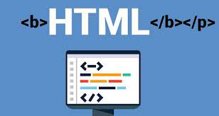

Etiquetas basicas de HTML
Las etiquetas HTML son fragmentos de código que permiten crear elementos HTML, estructuras básicas del lenguaje de programación HTML en el que se escriben las páginas web porque es el que entienden los navegadores.
El formato de una etiqueta HTML es un fragmento de texto encerrado entre corchetes angulares < >, y cada elemento HTML tiene una etiqueta de inicio del tipo
Indica la parte del cuerpo del contenido de un documento HTML. Es una etiqueta esencial para cualquier documento ya que indica donde empieza el contenido visible del documento. La parte superior del documento HTML, es donde podremos indicar los metadatos: título del documento, hojas de estilos, javaScript, CSS…
Un elemento que es usado mayoritariamente para agrupar otros elementos y actuar como plantilla de otros controles. La etiqueta nos ayuda a estructurar el documento en secciones. Es una etiqueta que nos ayuda a poder crear un enlace a una página web. El atributo principal de la etiqueta HTML es href, donde pondremos el enlace al que queremos conectar. Otro atributo muy usado es target, el cual nos sirve para indicar si el enlace se abrirá en una nueva ventana o en la misma.
Atributos y valores

Aunque cada una de las etiquetas HTML define sus propios atributos, encontramos algunos comunes a muchas o casi todas las etiquetas, que se dividen en cuatro grupos según su funcionalidad:
Atributos básicos:
Los atributos básicos se utilizan en la mayoría de etiquetas HTML y XHTML, aunque adquieren mayor sentido cuando se utilizan hojas de estilo en cascada (CSS)Atributos de internacionalización:
Estos atributos se utilizan en aquellas páginas que muestran sus contenidos en varios idiomas y las que quieran indicar de forma explícita el idioma de sus contenidosAtributos de eventos:
Estos atributos se utilizan en las páginas web que incluyen código JavaScript para realizar acciones dinámicas sobre los elementos de la página.Atributos de foco:
Se le denomina foco o focus, cuando un control o elemento del documento ha sido seleccionado. Cuando ese elemento deja de estar seleccionado, "pierde el foco" y es el nuevo elemento seleccionado el que se dice que tiene "el focoReferencias Bibliograficas